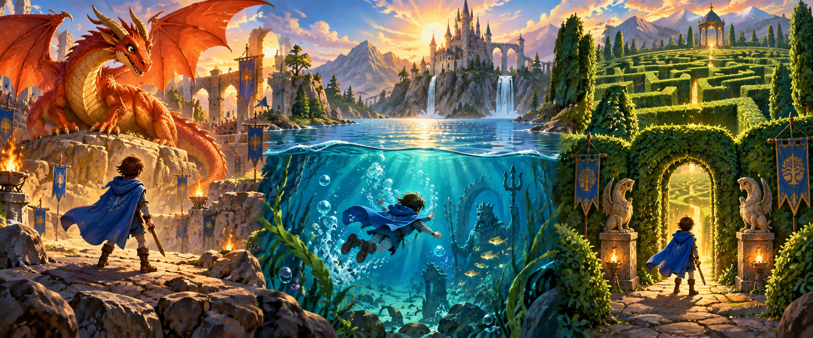

Lucas's Pick #1
Harry Potter and the Goblet of Fire

Why Lucas recommends it
One of my favorite books is Harry Potter and the Goblet of Fire. I like this book because there is this competition called the Triwizard Tournament. In the Triwizard Tournament there are three tasks. One is to defeat a dragon, two is to dive into a lake and three is to go into a very dangerous maze. I think you should read this book because it is filled with adventure and much more amazing things.
— Lucas